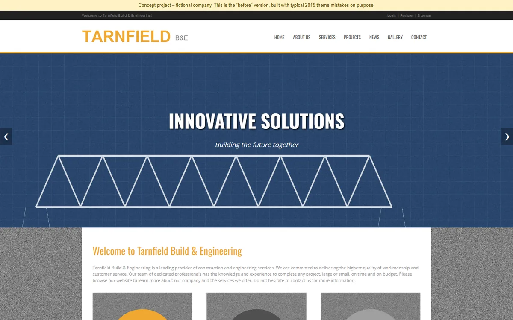
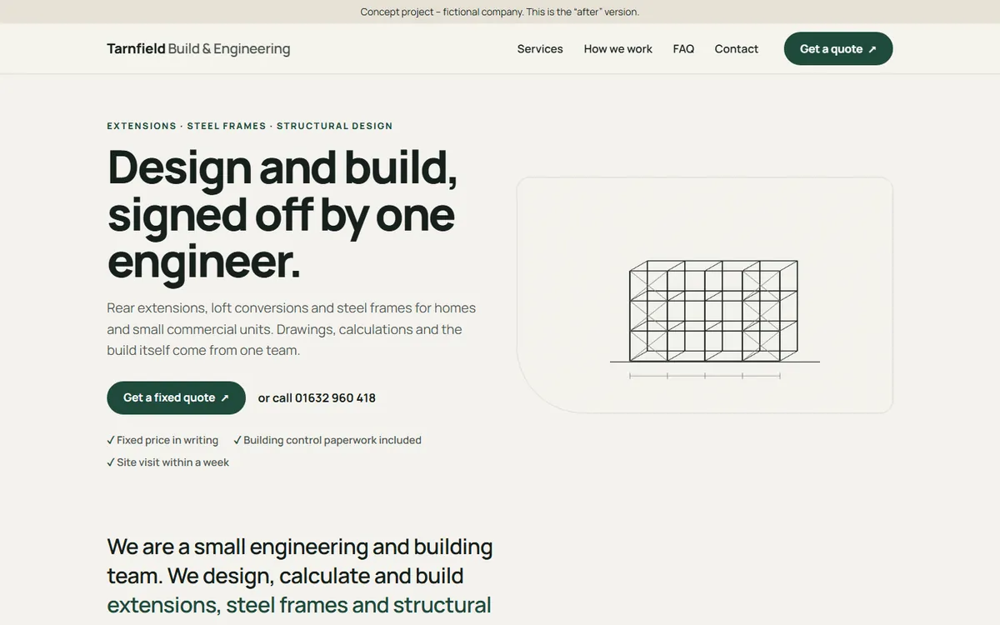

Drag to compare


BeforeAfterUse the mouse, a finger or the arrow keys. Screenshots of the first screen.
What we measured
| Measure | Before | After |
|---|---|---|
| Page weight (home page, compressed) | 6.5 MB | 95 kB |
| Files downloaded | 16 | 5 |
| Elements with accessibility errors, axe-core 4.14 (WCAG 2.2 A/AA) | 39 in 4 rules: contrast 31, images without alt 6, page language 1, link without name 1 | 0 |
| Mobile layout | fixed 980 px width, phone shows a zoomed-out desktop page | responsive, text 17 px, buttons at least 44 px |
| Contact in the first screen | no – phone only in the footer | quote button and phone number |
| Lighthouse, phone: performance / accessibility / best practices / SEO* | 73 / 61 / 96 / 36 | 99 / 100 / 100 / 63 |
| Largest Contentful Paint, phone (Lighthouse) | 35.3 s | 0.8 s |
| Lighthouse, desktop: performance / accessibility / best practices / SEO* | 97 / 61 / 100 / 36 | 100 / 100 / 100 / 63 |
Measured on 27.11.2026 in Chrome, by us, on the two static pages linked above. A real Elementor site also loads Elementor's own styles and scripts, so its page will be heavier and its scores lower than here – on your site we measure before and after and send you both numbers. Page weight is the sum of all downloaded files as the server sends them. You can check both pages yourself in any browser’s developer tools. Lighthouse scores come from PageSpeed Insights for “before” and for “after”, run once each on 27.11.2026 on the published pages; a new run can differ by a few points. *Both sample pages are hidden from Google on purpose (noindex), which lowers the SEO score of both; on a live site this tag is not there.
10 changes and why
One message in the first screen
“Welcome to our website” became what the firm does and for whom. A visitor sees at once if they are in the right place.
Quote button and phone at the top
A “Get a quote” button stays in the sticky header, the phone number is next to the main button. Before, contact details were only in the footer.
Slider removed
Three rotating 1 MB images became one light drawing. A slider hides 2 of its 3 messages, and here it weighed 3 MB on its own.
Images as WebP in two sizes
The browser picks 720 or 1200 px. Images below the first screen load only when the visitor scrolls to them. Before, three 900 px PNG icons alone weighed 3.4 MB.
Real mobile layout
Viewport set, one column on phones, text 17 px instead of 12 px, tap targets at least 44 px, a working menu button.
Menu from 7 items and 3 levels to 4 links
Hover-only dropdowns do not work on phones. Services, How we work, FAQ, Contact – everything is on one page.
Readable contrast
Light grey on white failed WCAG in 31 places. Now dark text on warm paper, one green accent for buttons and links.
A quote form people finish
Visible labels instead of placeholders, a project type list, a short privacy line and a clear reply time.
Basic SEO in place
Page title and description, one H1, language set, text about the area the firm works in, no tag cloud.
One font file instead of three
Two Google Fonts families (6 styles, 3 font files) became one variable font hosted with the site, and no script blocks the page from showing.
How this is done on a real WordPress site
- We rebuild the pages in Elementor containers on a copy of your site first. With Elementor Pro we use Theme Builder for the header and footer and the Form widget; on free Elementor, a header template and the form plugin you already have.
- Content, URLs and contact details stay; old slider and page builder add-ons are removed only after you approve the new pages.
- Images are converted to WebP, unused plugins and fonts are removed, then we measure again and send you the before/after numbers.